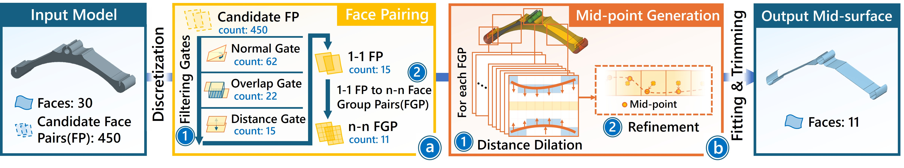
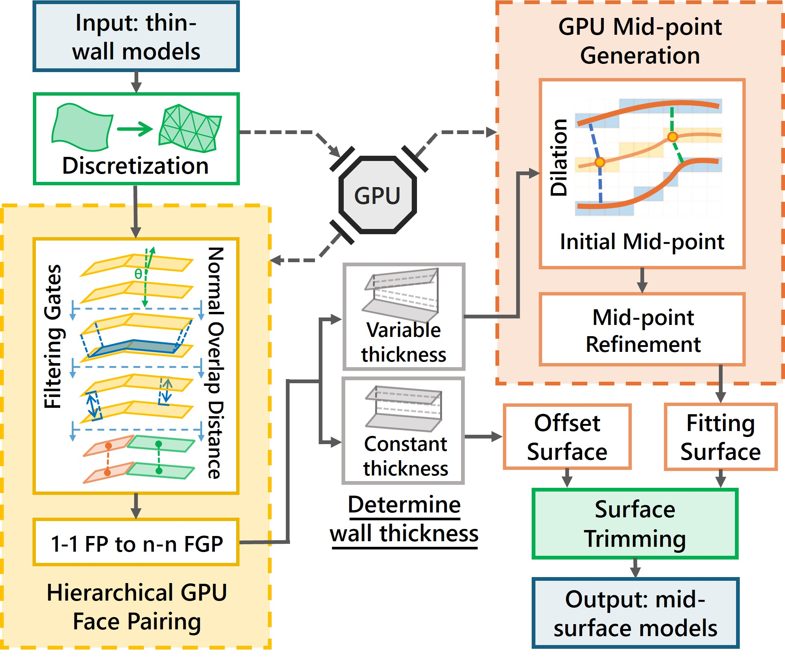
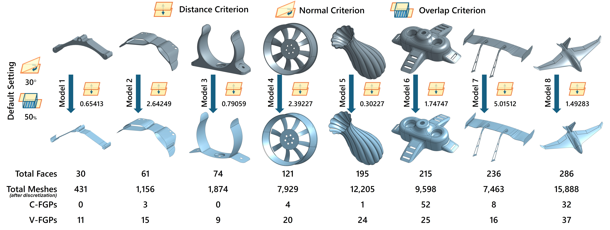

1 - Zhejiang University, Hangzhou, 310007, China
2 - Shenzhen Poisson Software Co., Ltd., Shenzhen, 518129, China
* - Corresponding Author
Abstract
Mid-surface abstraction is essential for finite element analysis of thin-walled CAD models, yet existing face pairing-based methods
suffer from quadratic complexity and CPU-bound bottlenecks, limiting scalability for variable-thickness models. We present
gMidSurf, a GPU-accelerated pipeline that transforms the two computational bottlenecks in mid-surface abstraction (face pairing
and mid-point generation) into massively parallel operations. For face pairing, we introduce a hierarchical filtering strategy that
progressively culls candidate pairs through three GPU-optimized gates: normal compatibility, simplified overlap criterion, and
LBVH-based distance queries, reducing the search space by 10–100× while maintaining cache coherence. For mid-point
generation, we employ parallel distance dilation followed by bracket-and-bisect refinement for precise equidistant point localization.
This method handles variable-thickness models with complex surfaces through complete dilation, thereby avoiding gaps and truncations
that occur in previous methods. Experimental results on real-world benchmarks demonstrate that gMidSurf achieves 4.2×–18.5×
speedups in face pairing and 4.8×–9.8× in mid-point generation compared to CPU implementations, yielding 5×–15× acceleration
on a commodity GPU (NVIDIA RTX 5090D) compared to state-of-the-art methods while maintaining geometric accuracy.

Overview: The input thin-walled model is first discretized into triangular meshes on the GPU. Then (a) hierarchical GPU-based face pairing applies three progressive filtering gates (normal, overlap, and distance) to prune candidate face pairs by 10–100× and identify the face group pairs (FGPs), abstracting 1-1 face pairs into n-n FGPs through parallel bipartite graph optimization. Next, (b) GPU-based mid-point generation produces initial mid-points via parallel distance dilation and refines them to precise equidistant points through a bracket-and-bisect kernel. Finally, the model undergoes surface fitting and trimming operations to determine the boundaries of the mid-surface, yielding the final output mid-surface.

Pipeline: The gMidSurf pipeline keeps geometry resident on the GPU through both core stages. Two computational bottlenecks — hierarchical GPU-based face pairing and dilation-based precise mid-point generation — are recast as massively parallel operations, while surface fitting and trimming run on the host. This end-to-end design preserves B-Rep modeling intent, supports both 1-1 and n-n face pairs, and handles constant- and variable-thickness regions robustly.
Technical Contributions
Key Results

Benchmark:
Eight iconic models (M1–M8) selected from the GrabCAD library cover a diverse range of geometric and topological configurations,
including constant- and variable-thickness FGPs (C/V-FGPs), high curvature, n-n pairings, and complex free-form surfaces.
Paper (PDF 5.5 MB) Supplementary Video (MP4 99.7 MB)
Li Ye, Xinhang Zhou, Xingyu Yang, Peng Fan, Ruofeng Tong, Hailong Li, Peng Du and Min Tang. 2026. gMidSurf: Hierarchical GPU-based Mid-surface Abstraction for Thin-walled CAD Models. Computer-Aided Design (To appear).
@article{ye26gmidsurf,
author = {Ye, Li and Zhou, Xinhang and Yang, Xingyu and Fan, Peng and Tong, Ruofeng and Li, Hailong and Du, Peng and Tang, Min},
title = {gMidSurf: Hierarchical GPU-based Mid-surface Abstraction for Thin-walled CAD Models},
journal = {Computer-Aided Design},
year = {2026},
publisher = {Elsevier}
}
MidSurfer: Efficient Mid-surface Abstraction from Variable Thin-walled Models
gDist: Efficient Distance Computation between 3D Meshes on GPU
CTSN: Predicting Cloth Deformation for Skeleton-based Characters with a Two-stream Skinning Network
D-Cloth: Skinning-based Cloth Dynamic Prediction with a Three-stage Network
N-Cloth: Predicting 3D Cloth Deformation with Mesh-Based Networks
I-Cloth: Incremental Collision Handling for GPU-Based Interactive Cloth Simulation
PSCC: Parallel Self-Collision Culling with Spatial Hashing on GPUs
I-Cloth: API for fast and reliable cloth simulation with CUDA
Efficient BVH-based Collision Detection Scheme with Ordering and Restructuring
MCCD: Multi-Core Collision Detection between Deformable Models using Front-Based Decomposition
TightCCD: Efficient and Robust Continuous Collision Detection using Tight Error Bounds
Fast and Exact Continuous Collision Detection with Bernstein Sign Classification
A GPU-based Streaming Algorithm for High-Resolution Cloth Simulation
UNC dynamic model benchmark repository
Collision-Streams: Fast GPU-based Collision Detection for Deformable Models
Fast Continuous Collision Detection using Deforming Non-Penetration Filters
Fast Collision Detection for Deformable Models using Representative-Triangles
DeformCD: Collision Detection between Deforming Objects
Self-CCD: Continuous Collision Detection for Deforming Objects
Interactive Collision Detection between Deformable Models using Chromatic Decomposition
Fast Proximity Computation Among Deformable Models using Discrete Voronoi Diagrams
CULLIDE: Interactive Collision Detection between Complex Models using Graphics Hardware
RCULLIDE: Fast and Reliable Collision Culling using Graphics Processors
Quick-CULLIDE: Efficient Inter- and Intra-Object Collision Culling using Graphics Hardware
This work was funded in part by "Pioneer" and "Leading Goose" R&D Program of Zhejiang Province (No. 2025C01086).